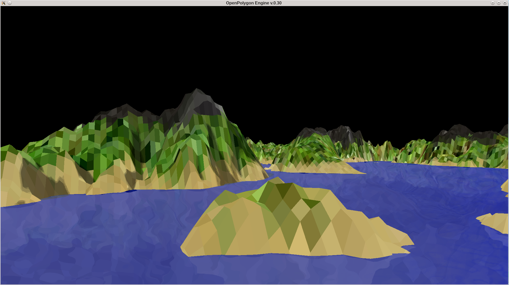
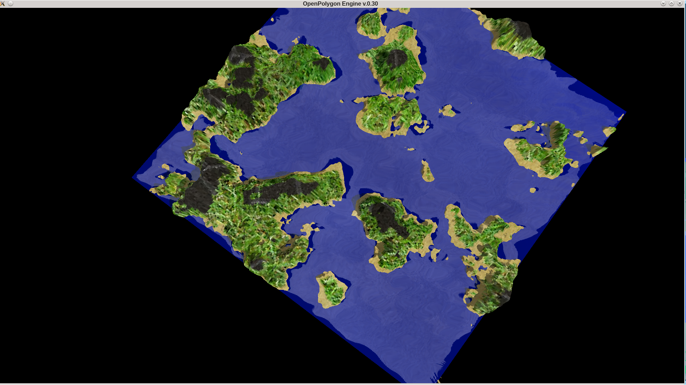
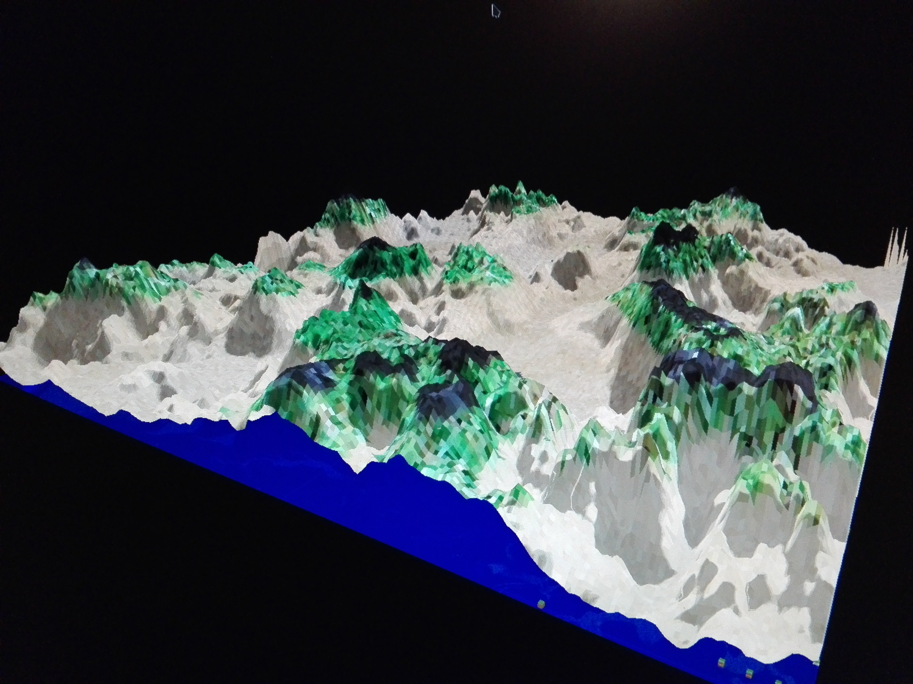
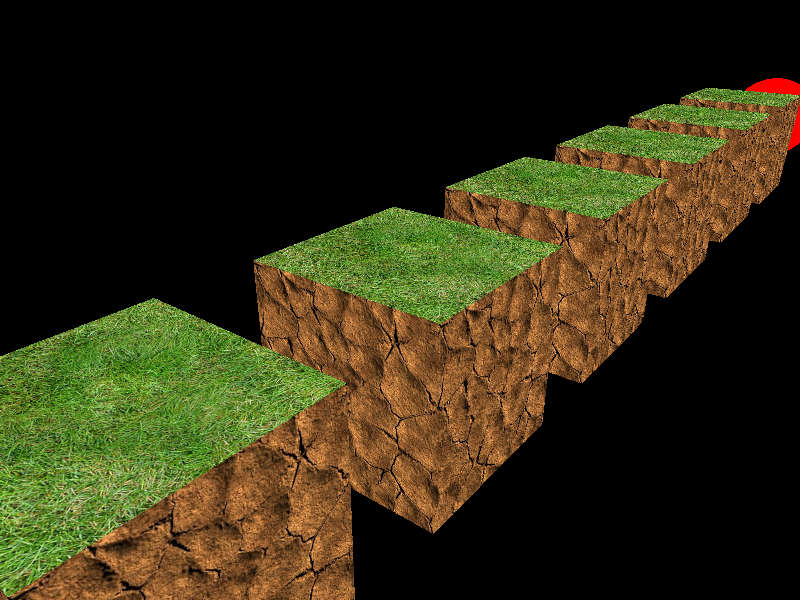

Final Terrain Scene with a Water-Effect :D
 The Water-Effect include a reflection, refraction and a fresnel algorithm.
Top Perspective from the Terrain Scene

Terrain with Shadow-Mapping-Effect

The first Cubes with Textures without mipmapping
